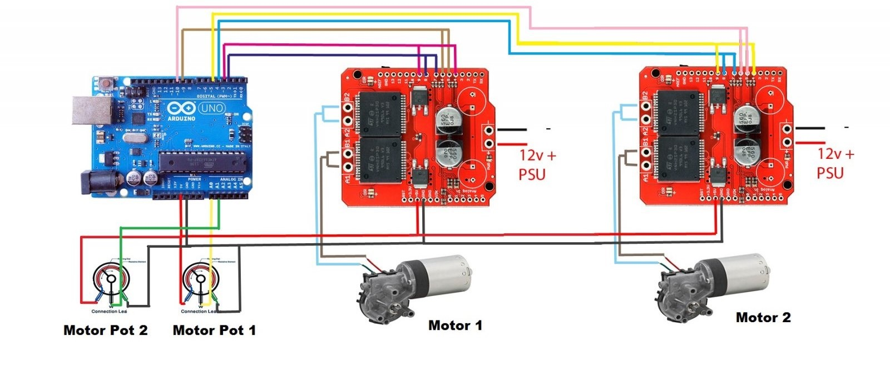
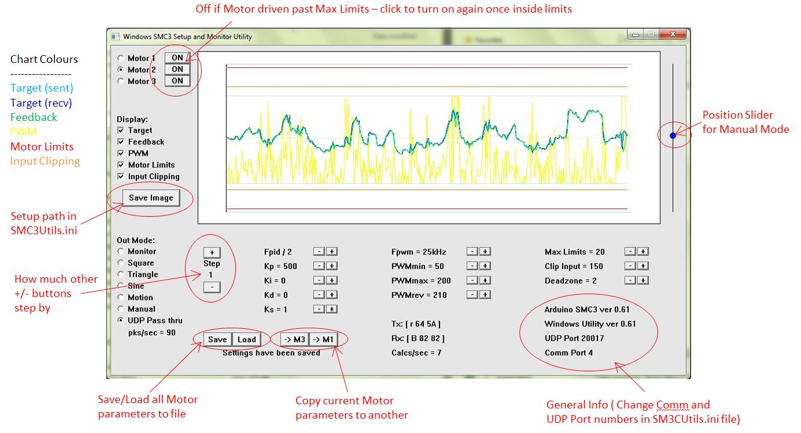

This codebase builds out the core software translation layer for a motion simulation racing rig. Designed directly around the Assetto Corsa physics engine ecosystem, the framework establishes high-frequency hooks to intercept real-time game telemetry data packet matrices to drive external physical motion mechanisms.

F1 Simulator Rig Architecture
The layout uses localized matrix coefficients to blend incoming structural demands and translate simulation states directly to physical motor positions:
-
Telemetry Processing Layer
Designed a custom Python telemetry mixer script to interface with the Assetto Corsa API. The framework parses live acceleration vector sheets, orientation angles, and dynamic force variables directly from the core game physics engine.
-
Hardware Communication Bridge
Streamlined real-time telemetry distribution by piping calculated target parameters directly via a serial USB link. This feeds instruction arrays to an Arduino Uno running the SMC3 utility for closed-loop motor driver control.
-
Actuator Matrix Mixing
Routes synchronized game physics states into mixed actuator control signals. For example, pitch configurations scale load requirements evenly across channels, while roll vectors shift the balance inversely to map targets directly to PID controller arrays.

Development Roadmap
Current optimization tasks involve fine-tuning localized matrix coefficients within the Python mixing logic to isolate high-frequency structural vibrations from primary macro-positioning movements. This ensures precise tracking stability under rapid multi-axis load changes.